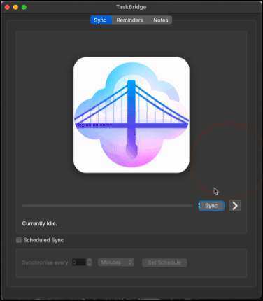
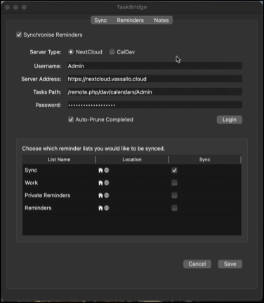
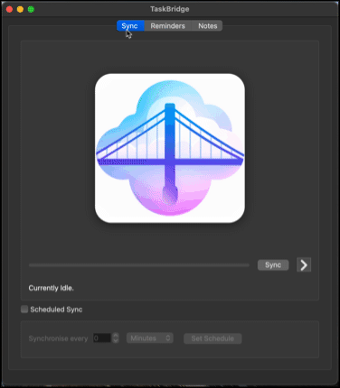

TaskBridge
Export your Apple Reminders & Notes to NextCloud, a local folder, or CalDav - and keep them in sync!



What is it?
TaskBridge synchronises Reminders and Notes from the Apple Reminders & Notes app. It features individual selection of reminder lists and notes folders to synchronise, scheduled sync, and background operation.
Download on TaskBridge.app or checkout the project on GitHub.